Colour bar guide shows continuous color scales mapped onto values.
Colour bar is available with scale_fill and scale_colour.
For more information, see the inspiration for this function:
http://www.mathworks.com/help/techdoc/ref/colorbar.html.
guide_colourbar(title = waiver(), title.position = NULL, title.theme = NULL, title.hjust = NULL, title.vjust = NULL, label = TRUE, label.position = NULL, label.theme = NULL, label.hjust = NULL, label.vjust = NULL, barwidth = NULL, barheight = NULL, nbin = 20, raster = TRUE, ticks = TRUE, draw.ulim = TRUE, draw.llim = TRUE, direction = NULL, default.unit = "line", reverse = FALSE, order = 0, ...) guide_colorbar(title = waiver(), title.position = NULL, title.theme = NULL, title.hjust = NULL, title.vjust = NULL, label = TRUE, label.position = NULL, label.theme = NULL, label.hjust = NULL, label.vjust = NULL, barwidth = NULL, barheight = NULL, nbin = 20, raster = TRUE, ticks = TRUE, draw.ulim = TRUE, draw.llim = TRUE, direction = NULL, default.unit = "line", reverse = FALSE, order = 0, ...)
A character string or expression indicating a title of guide.
If NULL, the title is not shown. By default
(waiver), the name of the scale object or the name
specified in labs is used for the title.
A character string indicating the position of a title. One of "top" (default for a vertical guide), "bottom", "left" (default for a horizontal guide), or "right."
A theme object for rendering the title text. Usually the
object of element_text is expected. By default, the theme is
specified by legend.title in theme or theme.
A number specifying horizontal justification of the title text.
A number specifying vertical justification of the title text.
logical. If TRUE then the labels are drawn. If
FALSE then the labels are invisible.
A character string indicating the position of a label. One of "top", "bottom" (default for horizontal guide), "left", or "right" (default for vertical guide).
A theme object for rendering the label text. Usually the
object of element_text is expected. By default, the theme is
specified by legend.text in theme or theme.
A numeric specifying horizontal justification of the label text.
A numeric specifying vertical justification of the label text.
A numeric or a unit object specifying
the width of the colorbar. Default value is legend.key.width or
legend.key.size in theme or theme.
A numeric or a unit object specifying
the height of the colorbar. Default value is legend.key.height or
legend.key.size in theme or theme.
A numeric specifying the number of bins for drawing colorbar. A smoother colorbar for a larger value.
A logical. If TRUE then the colorbar is rendered as a
raster object. If FALSE then the colorbar is rendered as a set of
rectangles. Note that not all graphics devices are capable of rendering
raster image.
A logical specifying if tick marks on colorbar should be visible.
A logical specifying if the upper limit tick marks should be visible.
A logical specifying if the lower limit tick marks should be visible.
A character string indicating the direction of the guide. One of "horizontal" or "vertical."
A character string indicating unit
for barwidth and barheight.
logical. If TRUE the colorbar is reversed. By default,
the highest value is on the top and the lowest value is on the bottom
positive integer less that 99 that specifies the order of this guide among multiple guides. This controls the order in which multiple guides are displayed, not the contents of the guide itself. If 0 (default), the order is determined by a secret algorithm.
ignored.
A guide object
Guides can be specified in each scale_* or in guides.
guide="legend" in scale_* is syntactic sugar for
guide=guide_legend() (e.g. scale_color_manual(guide = "legend")).
As for how to specify the guide for each scale in more detail,
see guides.
Other guides: guide_legend,
guides
df <- reshape2::melt(outer(1:4, 1:4), varnames = c("X1", "X2")) p1 <- ggplot(df, aes(X1, X2)) + geom_tile(aes(fill = value)) p2 <- p1 + geom_point(aes(size = value)) # Basic form p1 + scale_fill_continuous(guide = "colorbar")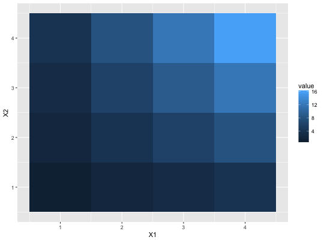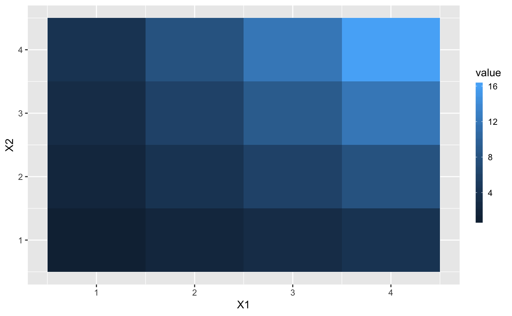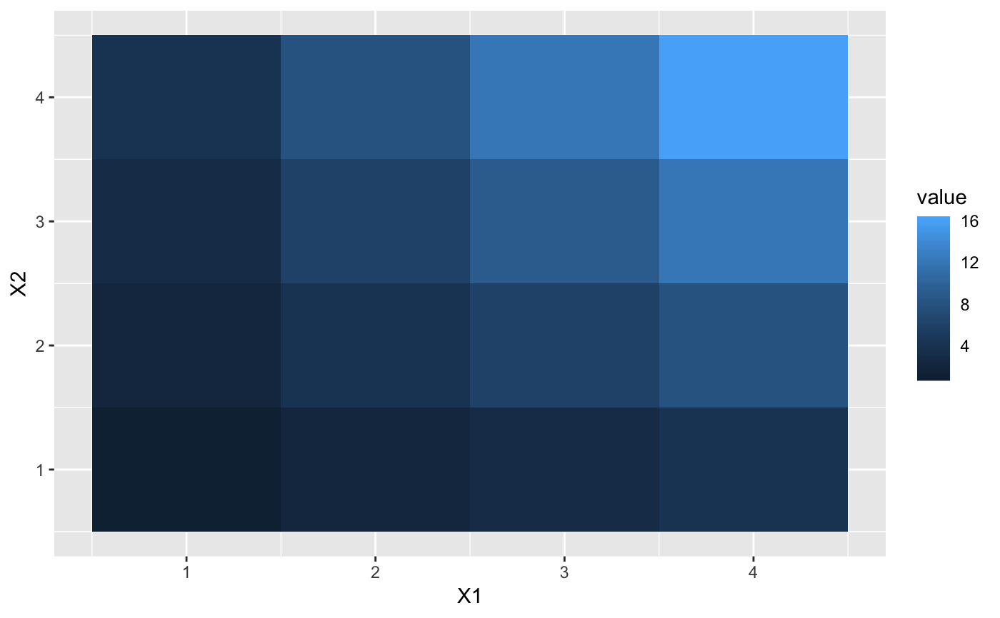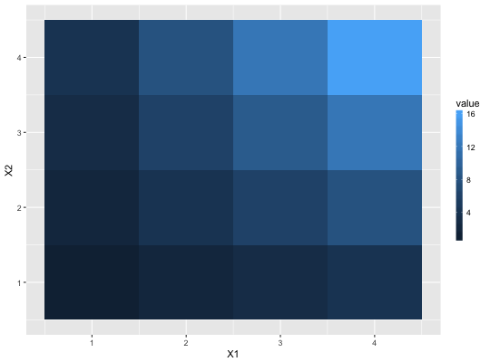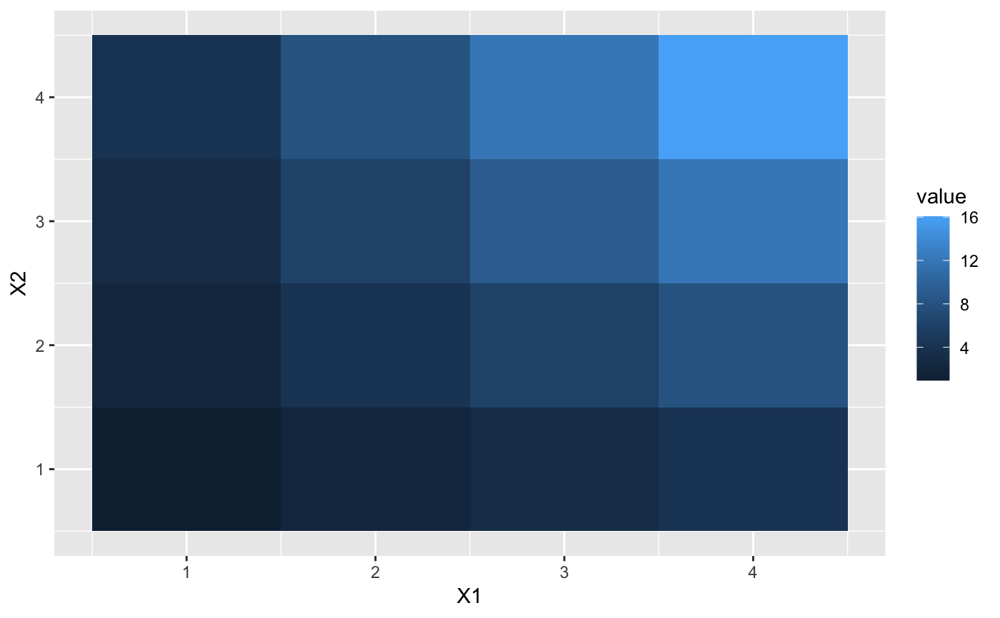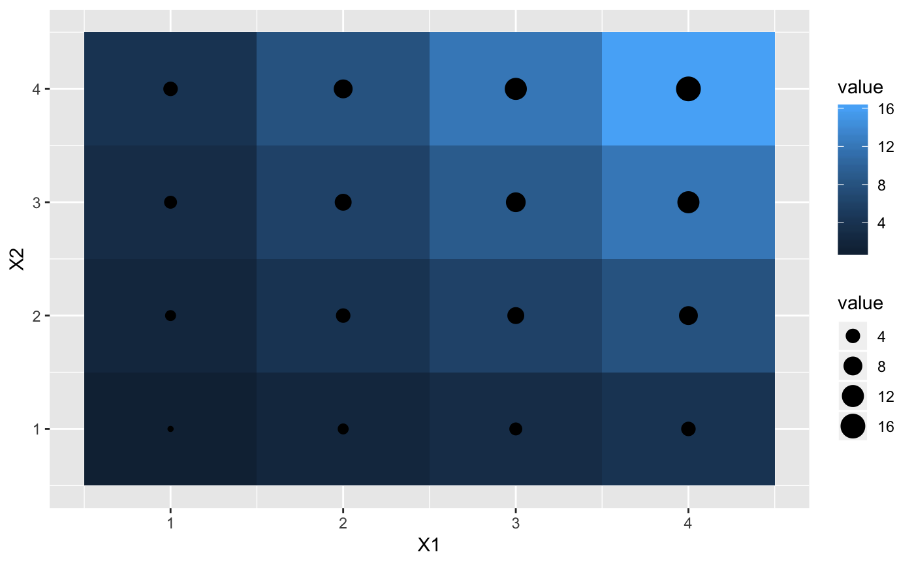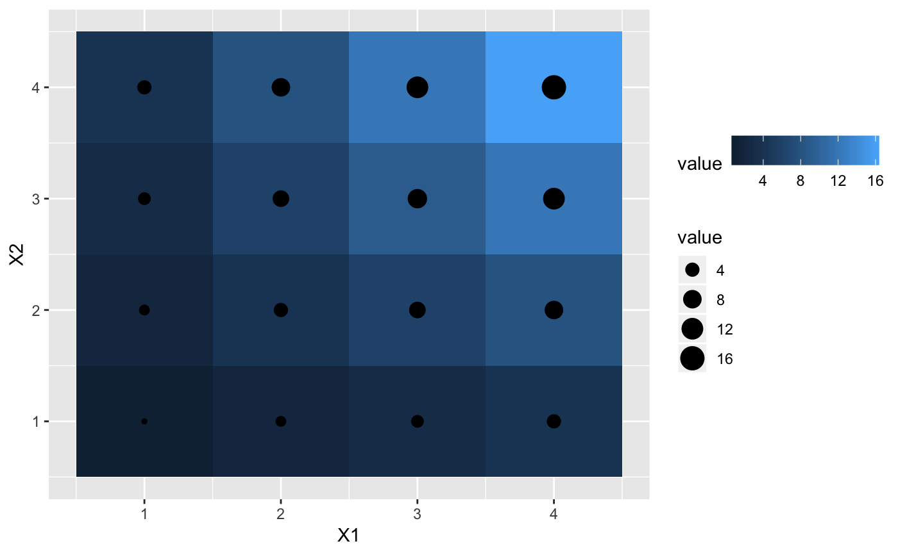# label theme p1 + guides(fill = guide_colorbar(label.theme = element_text(colour = "blue", angle = 0)))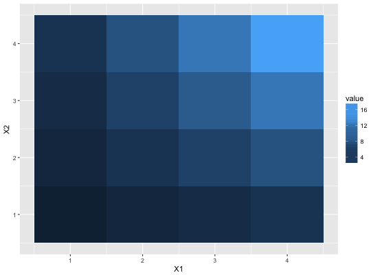# make top- and bottom-most ticks invisible p1 + scale_fill_continuous(limits = c(0,20), breaks = c(0, 5, 10, 15, 20), guide = guide_colorbar(nbin=100, draw.ulim = FALSE, draw.llim = FALSE))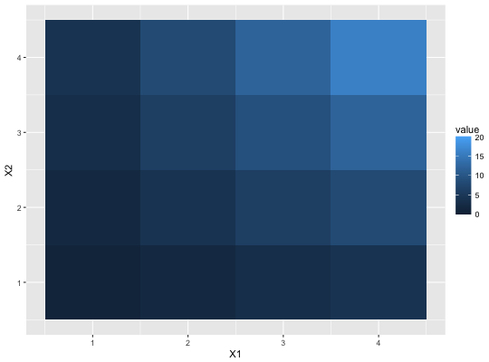# guides can be controlled independently p2 + scale_fill_continuous(guide = "colorbar") + scale_size(guide = "legend")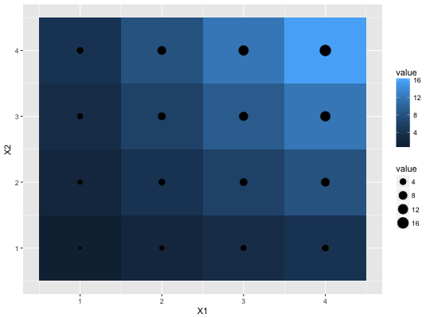p2 + scale_fill_continuous(guide = guide_colorbar(direction = "horizontal")) + scale_size(guide = guide_legend(direction = "vertical"))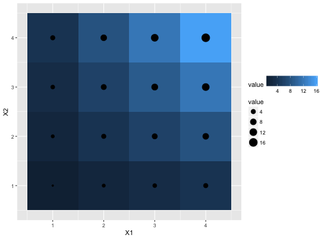